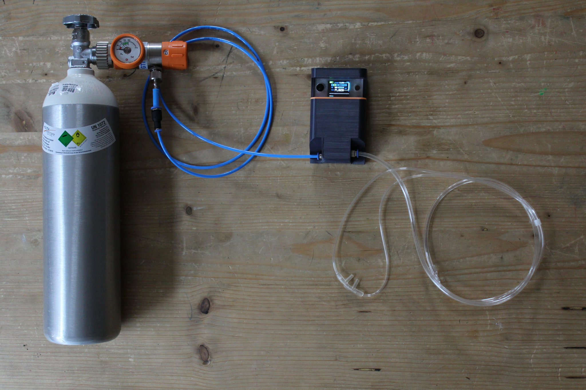
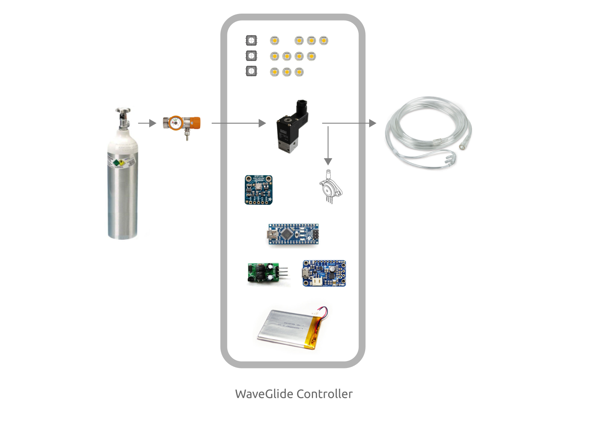
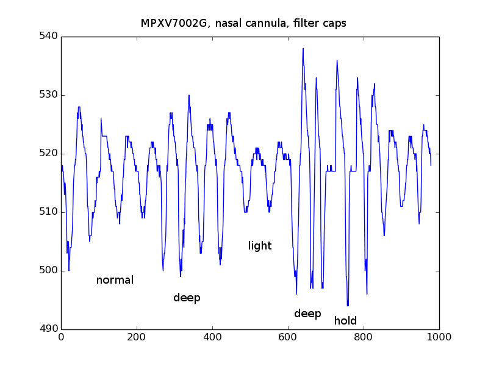

WaveGlide Oxygen System
WaveGlide is an automatic oxygen delivery system for glider pilots. It prevents hypoxia at high altitudes by adding oxygen to the inhaled air. Unlike medical constant flow systems it pulses the oxygen supply at the beginning of the breathing cycle and automatically adapts oxygen levels to altitude.
The pulsing allows for higher efficiency and consequently smaller oxygen cylinders. This works because the majority of inhaled air does not reach the alveoli and gets exhaled unused. The oxygen system therefore only oxygenates the inital air of every inhalation.
Altitude adapdation is crucial as well. The system compensatates for falling O2 density at altitude by increasing the O2 content (from the environmental 21% up to 100%). For this it measures the pressure altitude and adjusts the length of the oxygen pulse accordingly.
The system is specifically designed for high altitude soaring such as mountain wave flying but may be useful in other scenarios. The normal use case is to wear and use the system from the beginning of the flight and let it adjust the optimal oxygen supply levels until landing.
WaveGlide is fully open sourced and designed with simplicity in mind. This means power users can build, study, and modify the device with relative ease. WaveGlide is not a blackbox you have to trust. All design documents are published in our Github repository.
Status
This project is in Beta phase. Development began in late 2015 and we started flight testing the system in 2016. We hope to conclude the beta phase by the end of 2016 (LOWI gets most mountain waves in fall). Our latest flight was up to FL150 and the system performed as designed. Yet for a very complete system we still have work to do:
- Test operation above FL150.
- Test operation in cold temperatures.
- Meassure charging/discharging cycles and fine tune battery indicator.
- Optimize default oxygen supply/altitude curve.
- Implement self-dignostics and warning signals.
If you are interested in participating during this phase drop us a line (English or German): waveglide {at} nortd {dot} com. You are welcome to join.
Background
WaveGlide development started when I (Stefan Hechenberger) needed a new fun project. A group of us started to develop a serious passion for mountain wave soaring and I was reading everything there was about safty. I also found a fertile ground at the ISV with many experience XC pilots who agreed to do flight testing. One aspect of flying (and specifically soaring) that tends to be chronically overlooked is sub-optimal cognitive performance due to oxygen deprivation at higher altitudes.
To me it seemed clear that most oxygen systems are awkward and expensive. If there was an inexpensive, well designed system, so my logic, people would use oxygen more routinely.
The key part of the system is tracking the user's breathing rhythm. After trying many sensors I found a stellar differential pressure sensor that worked flawlessly. This cumulated in a proof-of-concept and then the first prototype in late 2015. These early systems worked so well that I had to continue ;)
Human Factors
Hypoxia is a signifficant risk factor in aviation. It affects pilots in adverse ways and the effects often go unnoticed -- You feel great until it's too late. Since hypoxia affects brain function (et alii), all kinds of cognitive processes are less effective. Pilots tend to overlook slow running processes like weather changes, have reduced conditional readiness, generally lack creativity when dealing with unusual situations, have simplistic internal arguments, low level of suspicion, and reduced situational awareness.
The negative effects gradually increase with altitude but are alleviated by the body's ability to compensate for reduced oxygen density. This compensation varies greatly between people. Canonically speaking the first noticable effect is reduced night vision at 1500m (5000'). From 2000m (6500') to 3800m (12500') the body can compensate lower oxygen availability. Above this altitude compensation ceases to be effective. Blood oxygen levels continually go down and cause increasingly more adverse effects. For example, useful time of consciousness (TUC) in 4500m (15000') can be as low as 30 minutes. After this time, loss of consciousness is not unusual. In 7500m (25000') TUC is down to 4 minutes.
Many more factors skew these simple rules. Different people react differently and do so differently on different days. For a more nuanced treatise on the effects of hypoxia and some good arguments to oxygenate early, see Nullhypoxie by Dr. med. Heini Schaffner.
The Law
Most countries base their legal oxygen requirements on FAA's FAR 91.211: Oxygen must always be supplemented above 14000' (4267m) and above 12500' (3810m) after a duration of 30 minutes. Depending on country this may or may not apply for glider pilots.
- Gebrauch von Sauerstoff by Steele Lipe
How much Oxygen?
It depends. The goal is to maintain blood oxygen saturation above 90%. This can be measured non-invasively through pulse oxymetry. A pulse oxymeter is a fairly cheap device which measures "sats" (SpO2) through the skin. We use these measurements to find useful default settings for base supply and altitude adaptation.
As a starting point we use the levels of constant flow systems (1 l/min/10000 ft, see Nullhypoxie by Heini Schaffner) and then optimize by timing the oxygen supply for best absorption.
To account for physiological differences in pilots, WaveGlide has settings to percentually increase/decrease the supply. Our aim is that most pilots can use the system's default setting. To find out what setting assures optimal sats we recommend the extensive use of pulsoxymetry to new users. This will provide the feedback to fly safely and find the best setting quickly.
Some care has to be taken to get correct measurements. Reduced blood circulation, cold extremities, excessive ambient light, nail polish, and ill-fitting probes can all skew the measurement.
Hardware Components
The oxygen systems is basically an oxygen cylinder which supplies additional oxygen to the pilot in a controlled way. The pressurized oxygen flows to the pilot due to the pressure differential.
At the top of the cylinder is a high pressure valve. This connects to a pressure regulator for controlling the constant flow rate. Then a tube runs to the WaveGlide Controller where a solenoid valve pulses the supply accordingly. The controller does this based on breathing rhythm and pressure altitude.
A nasal oxygen cannula gets the oxygen from the controller to the pilot. The same cannula also measures the minute pressure changes caused by the pilot's respiration.

Breathing Sensor
At the heart of the system is the MPXV7002G differential piezo pressure sensor. It measures the pressure changes caused by the pilots's resipiration. It is able to measure these changes through the same cannula that is being used to supply the oxygen.

See the Bill of Materials for more details on the components.
Firmware Component
The firmware runs on a stipped down Arduino (Adafruit Trinket Pro) and compiles from within the Arduino IDE without dependencies. This means anybody with some programming skills can easily study and extend the device.
No comparable system will provide you with such detailed information of how it operates and behaves. If you want to know how the system detects the breathing rhythm, how it calculates the oxygen pulse durations, or how it measures the altitude, it's all in the code. To increase legibility and make this in-depth view practical the code is written with a focus on simplicity.
The main files of interest are firmware.ino and rhythm.c. All other files are just responsible to integrate peripherials like pressure sensor, and OLED display.